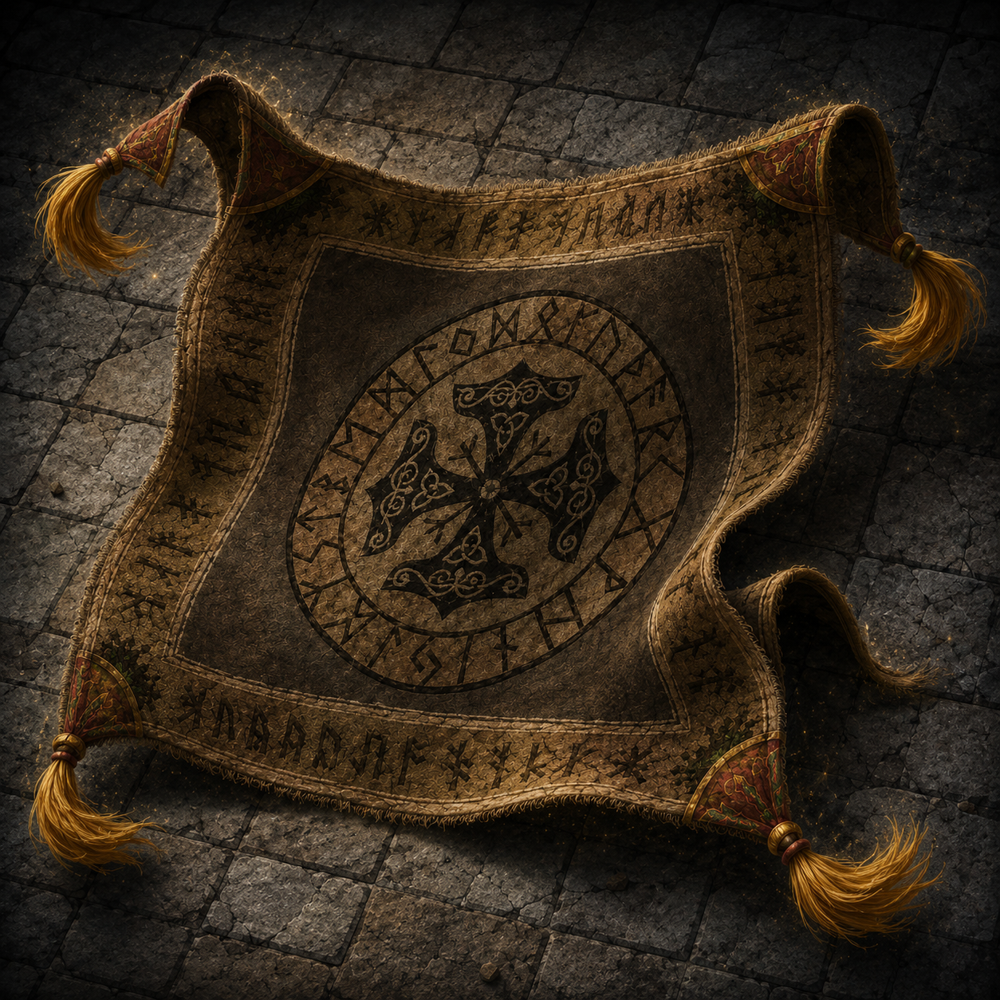

Thrain's Rug of Smothering
The moment began when Thrain Bearblood entered one of the upper chambers of the Foundry.
He spotted a large, ornate rug on the floor covered in strange symbols. Instead of caution, Thrain started singing along with the symbols in his own way — “Hi-Ho, Hi-Ho, it’s off to work we go…” — cheerfully humming the old tune as he moved around the rug.
He was wary — he suspected it might be a trap — but he treated it with respect. He didn’t step on it. He didn’t throw it aside roughly. He carefully walked around it.
While the rest of Tempest Company was engaged in full combat with animated armors in the nearby armory, Thrain continued his solo adventure. He checked the far side of the room and found some treasure. Then, still humming, he carefully began to roll up the rug to check underneath.
At that moment the Rug of Smothering revealed itself.
Thrain acted with confidence. With a natural 20 on an Athletics check, the powerful dwarf lifted the massive rug and rolled it up in one smooth, deliberate motion. There was never any combat — just a dwarf and a rug coming to an understanding.
The table erupted in laughter and cheers.
From that moment on, the Rug of Smothering seemed to accept Thrain as its master. What could have been a deadly trap became a strange, loyal (if slightly cursed) companion.
Thrain now carries the rolled-up rug proudly over his shoulder, tassels brushing against his beard, still occasionally humming “Hi-Ho” to it like a mischievous pet that finally found the right dwarf.
Thrain typically carries the rug in its Medium form slung over his shoulder, where it hangs like a thick, slightly mischievous cloak — tassels occasionally brushing against his beard as if the rug is happy with its new master.
17 (+3)
14 (+2)
10 (+0)
1 (−5)
3 (−4)
1 (−5)
Defenses
33 HP · AC 12 · Speed 10 ft · Init +2 · CR 2 · Construct · friend of the company
Blindsight 60 ft (blind beyond) · passive Perception 6
Smother
Melee +5, reach 5 ft, one Medium or smaller. Hit: grappled (escape DC 13); restrained, blinded, at risk of suffocating. Start of target’s turns: 2d6+3 bludgeoning. Rug can’t smother another while grappling.
Claimed Loyalty
Bonus action: change size at will — Huge (adv on STR checks/saves; +1d4 melee damage), Medium (shoulder cloak / easy carry), or Tiny (easier carry; adv on Stealth). No concentration.
Traits
Antimagic Susceptibility · Damage Transfer while grappling · False Appearance while motionless · Enlarge/Reduce on self at will (FG innate)
What it is
A Rug of Smothering claimed as companion — deadly trap turned loyal (if slightly cursed) partner. Personal name still pending.
Bond
Accepted Thrain after respect, song, and a natural 20 roll-up — understanding, not a fight.
Status
Carried Medium over Thrain’s shoulder. Present with Tempest Company. See also Session 15.
Companion record — with the company, not a PC dossier. Sourced from Atlas Portal 002 and the linked FG note / NPC.
Thrain: Discovery Report · Company Character Sheet